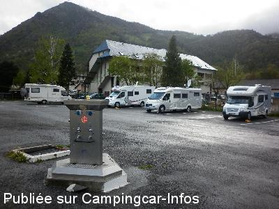
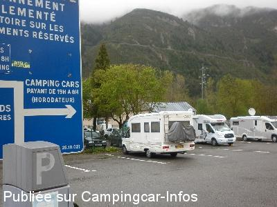
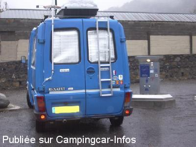
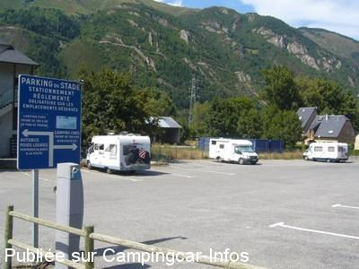
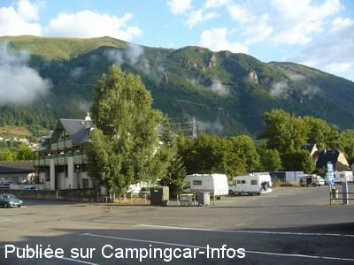
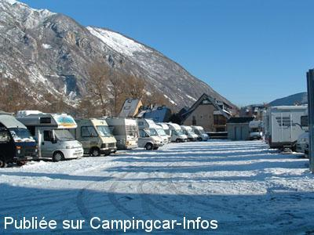

ASN = Aire de services avec stationnement nuit possible de :
SAINT LARY SOULAN
(N° 611)
Accès/adresse :
Route de Vieille Aure
65170 SAINT LARY SOULAN
65170 SAINT LARY SOULAN
Latitude : (Nord) 42.82248° Décimaux ou 42° 49′ 20′′
Longitude : (Est) 0.32329° Décimaux ou 0° 19′ 23′′
Tarif : 2015
Stationnement 19 h à 8 h : 6 €
Services : 2 €
Monnayeur
Type de borne : EURO-RELAIS
Services :


Sanitaires chauffés
Marché tous les samedis
Tous commerces a proximité
Station de ski l'hiver départ des remontées proches
Navette gratuite qui permet de rejoindre le téléphérique conduisant aux pistes
Autres informations :
40 emplacements
Aire municipale équipée de deux bornes
Tél : + 33(0)562 408 787
Tel Office du Tourisme : +33 (0)562 395 081
mairie@mairie-saint-lary.fr
http://www.saintlary.com

Le 03/05/2015 par JOEL&BRIGITTE 33

Le 03/05/2015 par JOEL&BRIGITTE 33

Le 14/11/2010 par coco et nath

Le 27/08/2008 par didierlinares

Le 27/08/2008 par didierlinares

Le 28/02/2005 par danielfavard
de
PTH72
le 18/08/2015 :
Passés le 21/07/2015.
Nuit calme.
Attention, le parcmètre n'accepte que la monnaie (pas de CB).
Passés le 21/07/2015.
Nuit calme.
Attention, le parcmètre n'accepte que la monnaie (pas de CB).
de
Daniel21
le 17/08/2015 :
Aire de service pratique pour faire la vidange et le plein d'eau, éventuellement pour un stationnement entre une route fréquentée et une zone artisanal, bruyant en semaine.
Aire de service pratique pour faire la vidange et le plein d'eau, éventuellement pour un stationnement entre une route fréquentée et une zone artisanal, bruyant en semaine.
de
ferrand
le 06/07/2015 :
De passage fin juin 2015
A le mérite d'exister.
Pres du centre ville.
Sans grand interet.
Aire payante 5 € la nuit.
De passage fin juin 2015
A le mérite d'exister.
Pres du centre ville.
Sans grand interet.
Aire payante 5 € la nuit.
de
BRIGITTE&JOEL 33
le 03/05/2015 :
Passé 3 nuit sur ce parking avec les petits enfants (25/26/27/2015)calme air de jeux mini stade a500m belle balade centre ville commerces a 400m merci a la ville de St LARY
Passé 3 nuit sur ce parking avec les petits enfants (25/26/27/2015)calme air de jeux mini stade a500m belle balade centre ville commerces a 400m merci a la ville de St LARY
de
philippe
le 02/11/2014 :
Nous avons passé 3 nuits sur cette aire qui a subit quelques changements. En effet juste derrière se trouve maintenant une société de construction. Résultat, du bruit à partir de 7h du matin en semaine. Dommage...
Nous avons passé 3 nuits sur cette aire qui a subit quelques changements. En effet juste derrière se trouve maintenant une société de construction. Résultat, du bruit à partir de 7h du matin en semaine. Dommage...
de
ECORCHON
le 12/01/2013 :
de Pierre le 12/01/2013
Avons passé 2 nuits sur cette aire les 23 et 24 décembre elle dispose de sanitaires chauffés et de toutes les facilités pour vidanges et plein d'eau et cela pour 6 euros elle est desservie par la navette gratuite qui permet de rejoindre le télépherique conduisant sur les pistes merci à la commune
de Pierre le 12/01/2013
Avons passé 2 nuits sur cette aire les 23 et 24 décembre elle dispose de sanitaires chauffés et de toutes les facilités pour vidanges et plein d'eau et cela pour 6 euros elle est desservie par la navette gratuite qui permet de rejoindre le télépherique conduisant sur les pistes merci à la commune
de
coco et nath
le 14/11/2010 :
bonjour nous avons passé la nuit du 29 au 30 octobre 2010 sur l aire de camping-car sans bruit et avec un jolie decors ... remplissage en eau plus vidange eau grise et noire sans difficulté ... merci la commune
bonjour nous avons passé la nuit du 29 au 30 octobre 2010 sur l aire de camping-car sans bruit et avec un jolie decors ... remplissage en eau plus vidange eau grise et noire sans difficulté ... merci la commune
de
didlal02
le 20/08/2010 :
Nous avons passé une nuit de dimanche à lundi très calme, aucune difficulté pour la vidange, la manoeuvre est loin d'êre insurmontable, le débit d'eau est plus que correct, arrêtons d'être exigeant et apprécions les efforts qui sont faits pour nous. Le centre ville très accueillant est à 2 pas.
Nous avons passé une nuit de dimanche à lundi très calme, aucune difficulté pour la vidange, la manoeuvre est loin d'êre insurmontable, le débit d'eau est plus que correct, arrêtons d'être exigeant et apprécions les efforts qui sont faits pour nous. Le centre ville très accueillant est à 2 pas.